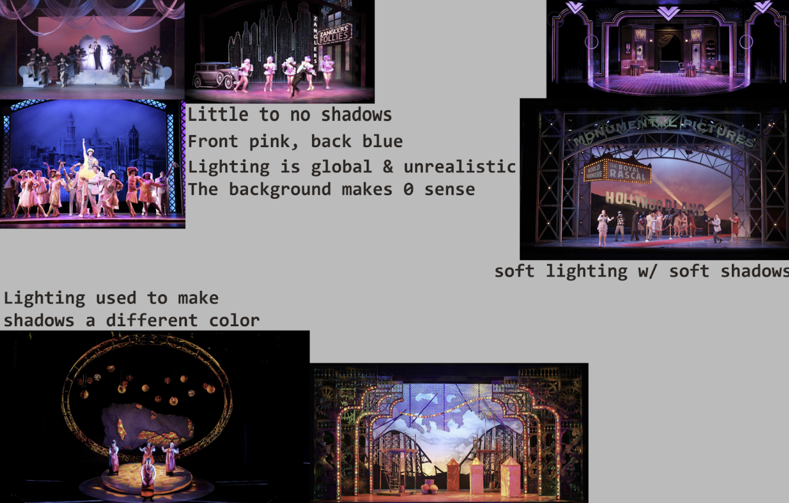
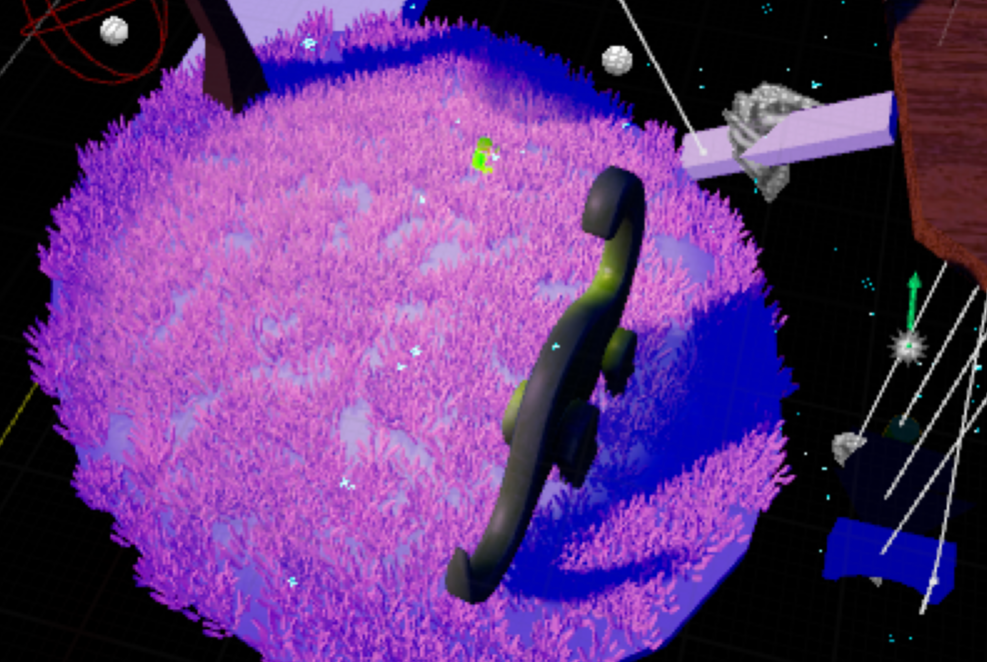

Changeling
The
Changeling VR Project started in 2020 and every semester has rotated to a different cohort of developers as an entrepreneurial co-op
at RIT. I joined the project for Summer 2023, about three years after development on the project. I was brought on as the lead of the new Technical
Art team, as there hadn't been enough technical artists prior to the group to warrant a separate group. The task we were told was our top priority on
the project was to go through and polish the visuals for an approaching Early Access release, which has since been delayed.
Optimization
The team noticed that while there were levels, VFX, animations, and post-processes present in the project,
the game ran at a low fps rate. This meant that the work done by the previous artists and designers couldn't be appreciated, as the game was difficult
to play through.
Changeling sideloads into a number of VR headsets, so the technical specs for each needed to be checked,
although we only had a few available to us for testing. The initial fps values we found are in the table below:
| Level |
Average |
Quest 2
i7-11700k |
Rift S
Ryzen 2700x |
| Onboarding |
35 fps |
36 fps |
30-40 fps |
| Intro Noir |
38 fps |
36 fps |
40 fps |
| Mind Palace |
76 fps |
72 fps |
80 fps |
| Mother's Level |
14 fps |
20 fps (lowest 9) |
10-20 fps |
| Father's Level |
9 fps |
15 fps (lowest 6.8) |
2.5-10 fps |
Seeing these issues, the team agreed we had one major goal for our time on the project: get each level to run at about 72-80 frames per second
consistently. The lowest frame rate we were comfortable allowing to pass was a consistent 60 fps, but our stretch goal was to run the game at
the maximum fps most VR headsets can handle at 120.
The first tasks divided amongst the team were to check for common pain points in student-made projects that could be affecting the frame rate -
real-time lighting, high poly models, and expensive materials and post-processes. The team found all of these.
A significant amount of
Changeling's assets are from asset stores and online packs made available by other developers. This came with the
issue that many of those assets weren't optimized for VR. We'd spend most of the rest of the summer just fixing these problems.
By the end of our first month on the project, our frames looked more like this:
| Level |
Average |
Quest 2
i7-11700k |
Rift S
Ryzen 2700x |
| Onboarding |
76 fps |
72 fps |
80 fps |
| Intro Noir - Street |
60 fps |
60-72 fps |
40 fps (jumps to 80) |
| Intro Noir - Home |
60 fps |
72 fps |
40 fps (jumps to 80) |
| Mind Palace |
60 fps |
72 fps |
80 fps (jumps to 40) |
| Mother's Level |
43 fps |
18-72 fps |
40 fps (jumps to 15-30) |
| Father's Level |
52 fps |
69-72 fps |
25-40 fps (jumps to 80) |
We'd swapped rendering pipelines at this stage, but we'd inevitably switch them back with little to
no problems. It helped us diagnose some larger problems with material and lighting complexity, as
well as extremely high-poly models.
Our final build for the summer had the following fps values:
| Level |
Average |
Quest 2
i7-9750H |
PC
Ryzen 7 3700X |
PC
Ryzen 7 5700X |
| Onboarding |
119 fps |
112-120 fps |
120 fps |
120 fps |
| Intro Noir - Apartment |
120 fps |
120 fps |
120 fps |
120 fps |
| Intro Noir - Street |
100 fps |
60 fps |
120 fps |
120 fps |
| Intro Noir - Home |
99 fps |
60 fps |
115-120 fps |
120 fps |
| Mind Palace |
100 fps |
60-120 fps |
70-120 fps |
112-120 fps |
| Mother's Level |
76 fps |
30 fps |
80-100 fps |
100-120 fps |
| Father's Level |
fps |
60-120 fps |
120 fps |
105-120 fps |
| Douglas's Level |
112 fps |
80-120 fps |
120 fps |
116-120 fps |
| Kirsten's Level |
119 fps |
120 fps |
117-120 fps |
No Record |
More work can certainly be done to further improve these values, but considering the team only had about three months to work on it, it was in a good
state to onboard the next developers with a few more guidelines on how to keep the project clean. As a bonus, the game was ~1 GB smaller, despite having
more scenes!
Want to see how the fps values changed over the whole project? More data is here!
Pipeline
As the project's first technical art team, part of our goal was to set a standard for the project moving forward. Ourselves and the other dev teams were
struggling to find the assets, blueprints, and documentation we needed for the project. Many of the assets we had were from asset packs previous teams
had downloaded, but there wasn't any solid record of them, meaning we didn't know what their licenses were, nor did we have the ability to credit or source
them. We also discovered a number of textures with watermarks on them that were clearly meant to be temporary but had no document recording that. This issue
ended up being something the Summer 2023 team worked on as a whole.
While fixing as many performance problems as we could, the team also set about finding and creating documentation for the parts of the game considered technical
art. Most of the development team didn't know what the title meant nor what we would be working on, so we wanted to ensure the right tasks were brought to us
and our peers knew what we were working on. We'd gotten more than a few questions in just our first few days as a team, and as we're all students, felt it was
best that we explain ourselves.
Along with a task board and request channel, the team set to work creating a tech art bible that we and other teams could reference to keep everything
consistent and easy to use. The team also set out to reorganize and clean out the project itself, as it had hundreds of unused assets and the file structure
had different organizational systems based upon what team had been working on it at the time.
As the tech art lead on the project, a significant amount of my time was spent in meetings with the dev teams. Usually, it was to help them figure out
their desired aesthetic along with our aesthetics lead,
Thevanamacha Conde,
lighting levels, or assist with any Perforce or Unreal problems that arose.
Lighting
Most of the lighting I worked on for
Changeling was temporary as levels were in the process of being built. The lighting needed to be kept consistent with
their design aspirations, but too many lights, or unoptimized lighting, and the framerate would tank in VR.
The most creative piece of lighting I got to do for
Changeling was in the Mind Palace. The goal was that it felt like a theater set, with theater lighting
to match. So, I set about looking into theater lighting for dreamscapes and dream-like scenes, something that would make the scene feel safe and unreal.
After a little of my own research, and a conversation with my sister, who studies technical theater, I knew the look and colors that were aimed for in physical theater
were soft, almost invisible blue shadows and pink lights. Colors that contrast too much usually end up settling themselves in the real-world or end up looking more
like a nightmare, like with red and green lights.

I used 2 lights in the scene to mimic the pink and blue look, and a third light yellow light to highlight the important level-islands in the scene. First, I baked a blue
light with no shadows, which will act as the shadow color in the scene and covers everything in the level. Next, I used a directional light set to a vibrant pink to light
most of the scene and cast a few soft shadows. The light yellow light adds just a slight amount of brightness to the important scenes, helping them stand out from the rest.
The biggest issue with the first pass is that while little to no shadows looks pretty good in a theater space, in the void of the Mind Palace, it just looked wrong. Little to
no shadows made the world uncomfortable and unfinished. Instead, I ended up positioning the lights so the shadows are longer, still giving that slightly dream-like feel we were
going for. Matched with the fireflies and gusts of wind and the Mind Palace felt peaceful enough for a couple playtesters to just sit in it, adding to the shock experienced when
the fae invade the player character's safe space.
